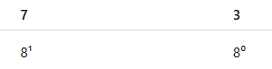

Conversion for Octal
Octal to Decimal
73₈ to Decimal (Using Method 1: Division/Multiplication / Place Value)
Step 1: Write the place values for octal

Step 2: Multiply each number by its place value
- 7 × 8¹ = 7 × 8 = 56
- 3 × 8⁰ = 3 × 1 = 3
Step 3: Add the results
56 + 3 = 59
Answer: 73₈ = 59₁₀
Octal to Binary
73₈ to Binary (Using Method 2: Substitution/Grouping)
Step 1: Write each octal digit separately
Octal number: 73₈
Digits: 7 and 3
Step 2: Convert the first digit (7) to decimal
- Actually, each octal digit is already decimal 0–7, so 7₈ = 7₁₀
Step 3: Convert 7₁₀ to binary (3 bits)
- Find the largest power of 2 ≤ 7:
- 2² = 4 → fits → put 1, remainder = 7 - 4 = 3
- 2¹ = 2 → fits → put 1, remainder = 3 - 2 = 1
- 2⁰ = 1 → fits → put 1, remainder = 1 - 1 = 0
- So 7₈ = 111₂
Step 4: Convert the second digit (3) to binary (3 bits)
- 3₈ = 3₁₀
- Largest power of 2 ≤ 3:
- 2² = 4 → too big → put 0
- 2¹ = 2 → fits → put 1, remainder = 3 - 2 = 1
- 2⁰ = 1 → fits → put 1, remainder = 1 - 1 = 0
So 3₈ = 011₂ (always use 3 bits for octal digits)
Step 5: Combine the binary groups
7 → 111
7 → 111
Combine → 111011₂
Answer: 73₈ = 111011₂
Octal to Hexadecimal
73₈ to Hexadecimal (Using Method 2: Binary Grouping / Substitution)
Step 1: Convert 73₈ to Decimal (base 8 → base 10)
- 7 × 8¹ = 7 × 8 = 56
- 3 × 8⁰ = 3 × 1 = 3
Add:
56 + 3 = 59₁₀
Step 2: Convert 59₁₀ to Binary (divide by 2)
59 ÷ 2 = 29 remainder 1
29 ÷ 2 = 14 remainder 1
14 ÷ 2 = 7 remainder 0
7 ÷ 2 = 3 remainder 1
3 ÷ 2 = 1 remainder 1
1 ÷ 2 = 0 remainder 1
Read bottom to top → 111011₂
Step 3: Group into 4 bits (for hex)
111011 → 0011 1011
Step 4: Convert each group to decimal
0011
= 0×8 + 0×4 + 1×2 + 1×1
= 3
1011
= 1×8 + 0×4 + 1×2 + 1×1
= 8 + 2 + 1 = 11
Step 5: Convert to hexadecimal symbols
Answer: 73₈ = 3B₁₆